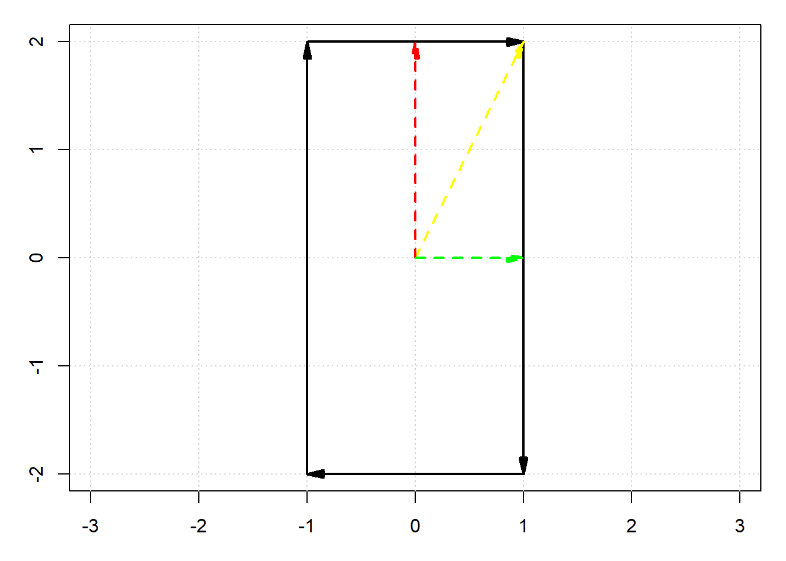

Chapter 2 Linear Algebra
Linear algebra and analytic geometry play a large role in what follows in this course. Here, we combine some of the ideas from chapters 2 and 3 in order to simplify things. We will discuss vectors, matrices and the idea of a basis. Further, we then look at the geometric interpretation of these ideas.
Note that we do not include everything from chapters 2 and 3 here. Certainly, there are a number of basic ideas here. However, comparing the content here to the three diagrams below, there are a number of missing ideas. In mathematical texts, there are often additional details included to create links between other branches of mathematics. For our purposes, we do not need those links.
While all of this material can be found in (Deisenroth, Faisal, and Ong 2020), you can also find it in other resources such as (Banerjee and Roy 2014), (Boas 2006), (Wikipedia contributors 2022) and (Strang 2009).
2.1 Vectors and Matrices
Consider the problem of solving the system of equations given by \[3x + 4y + 2z= 10\] \[2x - y + 5z= 3\] \[x-5y + 4z = -3.\] It is often difficult to solve large systems of equations by hand. Thus, we may want to use a computer algebra system like MAPLE or R in general. Solving a system of equations is an example of a linear algebra problem. We have constant linear coefficients (3, 4, 2, -1, 5, -5) that relate the input variables \(x\), \(y\) and \(z\) to the outputs 10, 3 and -3.
We can think about a vector \(\begin{pmatrix}x \\ y \\ z \end{pmatrix}\), that describes the values of \(x\), \(y\) and \(z\). The constant terms can be described in a similar way \(\begin{pmatrix}10 \\ 3 \\ -3 \end{pmatrix}\). We can also write down a matrix of coefficients \(\begin{pmatrix}3 & 4 & 2\\ 2 & -1 & 5\\ 1 & -5 & 4 \end{pmatrix}\). This system can be expressed as \[\begin{pmatrix}3 & 4 & 2\\ 2 & -1 & 5\\ 1 & -5 & 4 \end{pmatrix} \begin{pmatrix}x \\ y \\ z \end{pmatrix} = \begin{pmatrix}10 \\ 3 \\ -3 \end{pmatrix},\] using matrix notation.
We can think of a vector as an object that moves about space. This could be a physical space like \(\mathbb{R}^n\), or a space of data. In data science, we think of a vector as a list of attributes of an object whilst in mathematics and physics, we normally think of a vector moving around physical space.
As an example, consider the attributes of a house. The house could be 2500 square feet, it might have three bedrooms, it might have two bathroom and it might be worth $500,000. Thus, the vector representing this house would be \[\begin{pmatrix} 2500 \text{ft}^2\\ 3\text{ bedrooms}\\ 2 \text{ bathrooms}\\ \$500,000 \end{pmatrix} .\] Therefore, the generalized idea of moving about space includes the description of the attributes of an object.
Vectors follow two basic rules: addition and multiplication by a scalar number. If we think about a vector as a geometric object starting at the origin. Vector addition is done tip to tail.

Here, \(r = \begin{pmatrix}4\\2 \end{pmatrix}\) while \(s = \begin{pmatrix} 1 \\ 3 \end{pmatrix}\). We shift \(s\) so the the tail of \(s\) is at the tip of \(r\) and so the resulting vector from the origin to the tip of the new location of \(s\) is defined to be \(r + s\). If you compute \(s + r\), you will get the same vector and thus \(r+s=s+r\).
Scalar multiplication is defined by repeated addition of a vector.
We could also create vectors that are half as long or twice as long, etc. What we mean by \(-a\) is a vector with the same length of \(a\) going in the opposite direction.
We define space by two vectors. The one that moves left to right of length 1 is \(i\) and the one that moves vertically called \(j\). Thus, the vector \(r = \begin{pmatrix} 4\\2 \end{pmatrix} = 4i + 2j\).
As another example, consider \(a = \begin{pmatrix} 2\\1 \end{pmatrix}\) and \(b = \begin{pmatrix}3 \\-4\end{pmatrix}\). We would then say \[a + b = \begin{pmatrix} 2\\1 \end{pmatrix}+ \begin{pmatrix}3 \\-4\end{pmatrix} = (2i+1j) + (3i - 4j) = 5i-3j = \begin{pmatrix}5\\-3 \end{pmatrix}.\]
Note that one can show, using this definition, that associativity applies. Addition of vectors can be done in any order with as many vectors as you want. For scalar multiplication, we can see that \[ -2a = -2 \begin{pmatrix} 2\\1 \end{pmatrix} = -2(2i+1j) = -4i-2j = \begin{pmatrix} -4\\-2 \end{pmatrix}.\] It is also worth noting that this defines subtraction - simply addition by a negative multiple of 1.
Referring to the house example, if we added two house vectors together, we would have 5000 square feet, 6 bedrooms, 4 bathrooms and it would cost us $1,000,000. That is what we mean by twice a house - or simply two houses next to each other.
2.2 Vectors
We define two things; the length of a vector, also called its size, and the dot product of a vector, also called it’s inner scalar or projection product.
2.2.1 The Modulus
When we define a vector, we did it without reference to any coordinate system. In fact, the geometric object, just has two properties, its length and its direction. So irrespective of the coordinate system we decided to use, we want to know how to calculate these two properties of length and direction. If the coordinate system was constructed out of two unit vectors that are orthogonal to each other, like \(i = \begin{pmatrix}1 \\ 0 \end{pmatrix}\) and \(j = \begin{pmatrix}0 \\ 1 \end{pmatrix}\) in \(\mathbb{R}^2\), then we can say that a vector \(r\) is a linear combination of \(i\) and \(j\). That is, \[r =a \times i + b \times j.\] When we say \(i\) and \(j\) are unit vectors, we mean their length is 1.

By the Pythagorean Theorem, the length of \(r\) is given by the hypotenuse. So, if we draw a triangle, then we’ve got length \(ai\). This has length \(a\), because \(i\) is of length one. The perpendicular side is \(bj\) with length \(b\). So \(r^2 = a^2 + b^2\).
Rather than dealing with \(i\) and \(j\), we can write \(r = ai + bj = \begin{pmatrix}a \\ b \end{pmatrix}\). In our previous example, \[r = 3i + 5j = \begin{pmatrix}3 \\ 5 \end{pmatrix}.\]
The analysis so far has been for two spatial directions defined by unit vectors \(i\) and \(j\) that are at right angles to each other. However, the definition works more generally. The length of a vector \(r\), denoted \(|r|\), is always the square root of the sum of the squares of the components, \[|r| = \left|\begin{pmatrix} a \\ b \\ \vdots \\ n \end{pmatrix} \right| = \sqrt{a^2 + b^2 + \cdots + n^2}.\] In our example, the length of \(r\) is \[|r| = \sqrt{3^2+5^2} = \sqrt{34}.\]
2.2.2 The Dot Product
The dot product is one way to multiply two vectors. Given two vectors, \(r = \begin{pmatrix} r_i \\ r_j \end{pmatrix}\) and \(s = \begin{pmatrix} s_i \\ s_j \end{pmatrix}\), then \[r \cdot s = r_is_i + r_js_j.\] For longer vectors of equal length, the dot product is defined similarly. For example, if \(r = \begin{pmatrix} 2 \\ 1 \end{pmatrix}\) and \(s = \begin{pmatrix} 4 \\ 3 \end{pmatrix}\), then \[r \cdot s = 2 \times 4 + 1\times 3 = 11.\]
Note that the dot product is a scalar number. It is also commutative which means that \(r \cdot s = s \cdot r\). Next, the dot product is distributive over addition. Thus, \(r \cdot (s + t) = r \cdot s + r \cdot t\). Fourthly, the dot product is associative over scalar multiplication. So, for a scalar \(a\) and vectors \(r\) and \(s\), we know that \(r \cdot(as) = a(r \cdot s)\). Finally, we can note is that \(r \cdot r = |r|^2\).
The cosine rule from algebra states that \[c^2 = a^2 + b^2 - 2ab\cos \theta,\] where \(\theta\) is the angle between sides \(a\) and \(b\).
We translate that into a vector notation with vectors \(r\) and \(s\). In terms of sizes, we can then say that \[|r-s|^2 = |r|^2 + |s|^2 - 2|r||s|\cos \theta,\] where \(\theta\) is the angle between \(r\) and \(s\).

We can multiply this out using our dot-product. Here \[|r - s|^2 = (r-s) \cdot (r-s) = r \cdot r - 2s \cdot r + s \cdot s = |r|^2 - 2 s \cdot r + |s|^2.\] Comparing that to the cosine law, we see that \[s \cdot r = |r||s| \cos \theta.\] Thus, we find out something about the extent to which the vectors go in the same direction. If the vectors are perpendicular to each other, \(\cos \theta = 0\), so \(s \cdot r = 0\). If the vectors are parallel, \(\cos \theta = 1\), so \(s \cdot r = |s||r|\). If \(s\) and \(r\) are in opposite directions, then \(\cos \theta = -1\) and \(s \cdot r = -|s||r|\).
2.2.3 Projections
Consider the right triangle formed when we take vectors \(r\) and \(s\) and drop a line from the end of \(s\) perpendicular to \(r\). The projection vector can be thought of as the shadow of \(s\) onto \(r\). For that reason, this vector is called the scalar projection of \(s\) onto \(r\). We can determine the scalar projection by \[\text{scalar projection of s onto r} = \dfrac{r \cdot s}{|r|}.\] To determine the vector, called the vector projection of \(s\) onto \(r\), we compute \[\text{vector projection of s onto r} = \dfrac{r \cdot s}{|r|} \times \dfrac{r}{|r|}.\]

2.2.4 Changing the Basis
What we haven’t talked about is the coordinate system that we use to describe space. Consider the coordinate system defined by unit vectors \(e_1\) and \(e_2\).

Here, \(r = 3e_1 + 4e_2 = \begin{pmatrix}3 \\ 4 \end{pmatrix}\). However, the selection of \(e_1\) and \(e_2\) is a little arbitrary. For example, we could set up a green coordinate system with vectors \(b_1 = \begin{pmatrix}2 \\ 1 \end{pmatrix}\) and \(b_2 = \begin{pmatrix} -2\\4\end{pmatrix}\).

We can now describe \(r\) in terms of the vectors \(b_1\) and \(b_2\). The vectors we use to define the space (be they \(e\)’s, \(b\)’s or something else) are called basis vectors. Thus, the vector used to describe \(r\) only have meaning if we know the basis vectors. In the basis defined by \(e\), we define \(r\) as the vector \(r_e= \begin{pmatrix} 3 \\ 4\end{pmatrix}\). In the basis described by the \(b\) vectors, we would describe \(r\) as \(r_b= \begin{pmatrix} 2 \\ 1/2 \end{pmatrix}\). The vector \(r\) exists completely independently of the coordinate system we use to describe the numbers in the list, describing \(r\).
Now, if the new basis vectors, \(b\), are perpendicular to each other, then the dot product has a nice application. We can determine the value of \(r_b\), if we can describe the \(b\) vectors in terms of the \(e\) vectors. Here, \(b_1 = \begin{pmatrix}2 \\ 1 \end{pmatrix}\) and \(b_2 = \begin{pmatrix} -2\\4\end{pmatrix}\) in terms of vectors \(e\). (In this case, the \(b\) vectors are orthogonal - this can be checked by taking their dot product). By projecting \(r\) onto \(b_1\) and \(b_2\), we find two vectors in the direction of \(b_1\) and \(b_2\), each with lengths representing how much of those vectors is required to create \(r\). Looking at the diagram below, it appears we need 2 \(b_1\) vectors and only 1/2 of a \(b_2\) vector.

Mathematically, we calculate \(r_b\) by taking scalar projections. The scalar projection of \(r\) onto \(b_1\) is \[\dfrac{r_e \cdot b_1}{|b_1|^2} = \dfrac{3(2) + 4(1)}{\sqrt{2^2+1^2}^2} = \dfrac{10}{5} = 2.\] The scalar projection of \(r\) onto \(b_2\) is \[\dfrac{r_e \cdot b_2}{|b_2|^2} = \dfrac{3(-2) + 4(4)}{\sqrt{(-2)^2+4^2}^2} = \dfrac{10}{20} = \dfrac{1}{2}.\]
Thus, we can see that \(r_b\) is simply the vector that has first component 2 and second component 1/2, \(r_b = \begin{pmatrix} 2 \\ 1/2 \end{pmatrix}\), as illustrated in the diagram. Therefore, vectors can be re-described using a basis that is not the traditional basis provided that the new basis vectors are orthogonal to each other.
2.2.5 Linear Independence
A basis is a set of \(n\) vectors that are not linear combinations of each other (they are said to be linearly independent) and they span (describe in terms of linear combinations) all points in the space. The space is then \(n\) dimensional.
For example, consider the vectors \(b_1\) and \(b_2\). By taking linear combinations of \(b_1\) and \(b_2\), we can create any vector in \(\mathbb{R}^2\). If we consider a third vector \(b_3\), it must not be a linear combination of \(b_1\) and \(b_2\) to be considered part of the basis. Thus, \[b_3 \not = a_1 b_1 + a_2 b_2,\] for any real numbers \(a_1\) and \(a_2\). If this were true, we would say \(b_3\) is linearly independent.
Note that our basis need not be unit vectors nor do they have to be orthogonal. However, it is easier if they are. So, a good trick is to try to use unit vectors that are orthogonal to each other.
2.2.6 An Application
Consider a neural network in machine learning that recognizes faces. This sort of neural network may want to make some transformation of all the pixels into a new basis that describes the nose shape, the skin tone, the distance between the eyes, etc. Thus, the goal of the learning process of the neural network is going to be to derive a set of basis vectors that extract the most information-rich features of the faces.
2.3 Matrices
We have seen the problem of solving the system of equations given by \[3x + 4y + 2z= 10\] \[2x - y + 5z= 3\] \[x-5y + 4z = -3.\] We begin by constructing a matrix \[\begin{pmatrix}3 & 4 & 2\\ 2 & -1 & 5\\ 1 & -5 & 4 \end{pmatrix} \begin{pmatrix}x \\ y \\ z \end{pmatrix} = \begin{pmatrix}10 \\ 3 \\ -3 \end{pmatrix},\] representing the problem. We can multiply the matrix by the vector by saying \[\begin{pmatrix}3 & 4 & 2\\ 2 & -1 & 5\\ 1 & -5 & 4 \end{pmatrix} \begin{pmatrix}x \\ y \\ z \end{pmatrix} = \begin{pmatrix}3x+ 4y +2z\\ 2x -1y +5z\\ 1x-5y +4z \end{pmatrix}.\] So, we take the entries in row one and multiply each one by the corresponding entry in the vector and add them up. We do the same with rows 2 and 3. This gives us back the original system of equations.
2.3.1 Using Matrices to Transform Space
Notice that if we take a matrix \(\begin{pmatrix} 1 & 2 \\ 3 & 4 \end{pmatrix}\) and multiply it by the unit vector \(\begin{pmatrix} 1 \\ 0 \end{pmatrix}\). The result is \[\begin{pmatrix} 1 & 2 \\ 3 & 4 \end{pmatrix}\begin{pmatrix} 1 \\ 0 \end{pmatrix} = \begin{pmatrix} 1 \\ 3 \end{pmatrix}.\] Similarly, if we multiply by the other unit vector, we get \[\begin{pmatrix} 1 & 2 \\ 3 & 4 \end{pmatrix}\begin{pmatrix} 0 \\ 1 \end{pmatrix} = \begin{pmatrix} 2 \\ 4 \end{pmatrix}.\] Thus, multiplying a matrix by a unit vector simply gives the vector of terms in that variable or direction.
Some properties of matrices that are important include that for a matrix \(A\) and a vector \(r\) and \(s\) and scalar \(n\), \[A(nr) = n(Ar)\] \[A(r + s) = Ar + As.\] Playing around with a few quick examples will help you verify these properties.
2.3.2 Special Transformations
We begin by defining the identity matrix \(I = \begin{pmatrix} 1 & 0 \\ 0 & 1 \end{pmatrix}\). Multiplying a vector or matrix by \(I\) leaves the vector or matrix unchanged. That is, \(\begin{pmatrix} 1 & 0 \\ 0 & 1 \end{pmatrix}\begin{pmatrix} x \\ y \end{pmatrix} = \begin{pmatrix} x \\ y \end{pmatrix}\) for any matrix \(A\). To scale space by \(a\) in the \(x\) direction and \(b\) in the \(y\) direction, we replace \(I\) by the matrix \(\begin{pmatrix} a & 0 \\ 0 & b \end{pmatrix}.\) For example, \[\begin{pmatrix} a & 0 \\ 0 & b \end{pmatrix}\begin{pmatrix} x \\ y \end{pmatrix} = \begin{pmatrix} ax \\ by \end{pmatrix}.\] Thus, whatever we had as our \(\begin{pmatrix} x \\ y \end{pmatrix}\) will be stretched (or shrunk) \(a\) times in the \(x\) direction and \(b\) times in the \(y\) direction. In essence, we have changed the size of our grid space from 1 x 1 to a x b.
If we want to flip the matrix in the negative direction, simply make the entries in the identity matrix negative rather than positive. Here, \(\begin{pmatrix} -1 & 0 \\ 0 & -1 \end{pmatrix}\begin{pmatrix} x \\ y \end{pmatrix} = \begin{pmatrix} -x \\ -y \end{pmatrix}\). Combining this type of transformation with an expansion or contraction allows us to create grids of any size in any direction.
Another matrix to consider is \(\begin{pmatrix} 0 & 1 \\ 1 & 0 \end{pmatrix}\). This matrix flips everything about the 45 degree line. The same matrix with -1 in place of 1 will flip over the 45 degree line then again over the \(x\)- axis.
While the goal here is not to teach linear algebra, we do need some of these ideas for data science. For example, for facial recognition, we cannot assume that every picture has a face that faced forward and was exactly centered with the exact same level of focus on the face. Thus, we need to stretch, shear or rotate the face based on these sorts of transformations.
2.3.3 Matrix Composition
If you want to do any shape alteration, such as all the pixels in an image of a face or something like that, then you can always make that shape change out of some combination of rotations, shears, stretches and inverses. That is, one can apply one translation \(A_1\) to a vector \(r\). Then, applying a second translation \(A_2\) to the results, then one has, in essence performed a composition of two translations.
Consider an example in which we want to rotate our vector 90 degrees clockwise. In this case, our first standard basis vector \(e_1\) would move to \(\begin{pmatrix} 0 \\ -1 \end{pmatrix}\) and our second standard basis vector \(e_2\) would be rotated to become \(\begin{pmatrix} 1\\0 \end{pmatrix}\). So, our first transformation \(A_1 = \begin{pmatrix} 0 &1\\ -1 & 0 \end{pmatrix}\).
The second transformation we want to make is to take the original basis vectors and we want to mirror these vectors across the \(y\)-axis. Thus, the first basis vector \(e_1\) becomes \(\begin{pmatrix} -1\\0 \end{pmatrix}\) and the second basis vector \(e_2\) is unchanged. Thus, \(A_2 = \begin{pmatrix} -1 & 0\\0 & 1 \end{pmatrix}\).
Putting these transformations together, we get \(A_2 A_1 = \begin{pmatrix} -1 & 0\\0 & 1 \end{pmatrix} \begin{pmatrix} 0 &1\\ -1 & 0 \end{pmatrix}= \begin{pmatrix}0 & -1\\ -1 & 0 \end{pmatrix}\). Without thinking about this geometrically, the multiplication is done by multiplying each row of \(A_2\) by each column of \(A_1\) and taking every combination of these.
Note that doing \(A_2\) to \(A_1\) is not the same thing as doing \(A_1\) to \(A_2\). Thus, matrix multiplication (composition of matrix translations) is not commutative. We can show this by noting that \(A_1 A_2 = \begin{pmatrix} 0 & 1\\ 1 & 0 \end{pmatrix}\). So, while matrix multiplication is associative, \[A_3(A_2A_1) = (A_3A_2)A_1\] but it is not commutative and \(A_1A_2 \not = A_2A_1,\) in general.
2.3.4 Gaussian Elimination
Finally, we can solve our system of equations problem given by \[3x + 4y + 2z= 10\] \[2x - y + 5z= 3\] \[x-5y + 4z = -3.\]
We rewrote this as \[\begin{pmatrix}3 & 4 & 2\\ 2 & -1 & 5\\ 1 & -5 & 4 \end{pmatrix} \begin{pmatrix}x \\ y \\ z \end{pmatrix} = \begin{pmatrix}10 \\ 3 \\ -3 \end{pmatrix}.\]
A matrix is in row echelon form if it has the form \[\begin{pmatrix}1 & a & b\\0 & 1 & c \\ 0 & 0 & 1 \end{pmatrix}.\] By adding or subtracting rows of a matrix, you can convert a matrix to row echelon form without changing what the matrix tells you. In essence, you would be solving a system of equations by elimination - though, in a matrix form.
\[\begin{pmatrix}3 & 4 & 2\\ 2 & -1 & 5\\ 1 & -5 & 4 \end{pmatrix} \begin{pmatrix}x \\ y \\ z \end{pmatrix} = \begin{pmatrix}10 \\ 3 \\ -3 \end{pmatrix}\] First, we replace row 1 by row 1 minus row 2 (leave the xyz vector alone since that just holds the places of the variables).
\[\begin{pmatrix}1 & 5 & -3\\ 2 & -1 & 5\\ 1 & -5 & 4 \end{pmatrix} \begin{pmatrix}x \\ y \\ z \end{pmatrix} = \begin{pmatrix}7 \\ 3 \\ -3 \end{pmatrix}\]
Next, we can now replace row 2 with 2 times row 1 minus row 2 and row 3 with row 1 minus row 3.
\[\begin{pmatrix}1 & 5 & -3\\ 0 & 11 & -11\\ 0 & 10 & -7 \end{pmatrix} \begin{pmatrix}x \\ y \\ z \end{pmatrix} = \begin{pmatrix}7 \\ 11 \\ 10 \end{pmatrix}\] Next, we divide row 2 by 11.
\[\begin{pmatrix}1 & 5 & -3\\ 0 & 1 & -1\\ 0 & 10 & -7 \end{pmatrix} \begin{pmatrix}x \\ y \\ z \end{pmatrix} = \begin{pmatrix}7 \\ 1 \\ 10 \end{pmatrix}\]
We subtract 10 times row 2 from row 3 and replace row 3 with that row.
\[\begin{pmatrix}1 & 5 & -3\\ 0 & 1 & -1\\ 0 & 0 & 3 \end{pmatrix} \begin{pmatrix}x \\ y \\ z \end{pmatrix} = \begin{pmatrix}7 \\ 1 \\ 0 \end{pmatrix}\] Finally, we divide row 3 by 3 to get row echilon form.
\[\begin{pmatrix}1 & 5 & -3\\ 0 & 1 & -1\\ 0 & 0 & 1 \end{pmatrix} \begin{pmatrix}x \\ y \\ z \end{pmatrix} = \begin{pmatrix}7 \\ 1 \\ 0 \end{pmatrix}\]
So, we know that \(z = 0\), and by back substituting in row 2 (essentially adding rows 2 and 3), we know \(y = 1\).
\[\begin{pmatrix}1 & 5 & -3\\ 0 & 1 & 0\\ 0 & 0 & 1 \end{pmatrix} \begin{pmatrix}x \\ y \\ z \end{pmatrix} = \begin{pmatrix}7 \\ 1 \\ 0 \end{pmatrix}\]
By back substituting in row 1 (adding 3 row 3 and -5 row 2 to row 1), we know that \(x = 2\).
\[\begin{pmatrix}1 & 0 & 0\\ 0 & 1 & 0\\ 0 & 0 & 1 \end{pmatrix} \begin{pmatrix}x \\ y \\ z \end{pmatrix} = \begin{pmatrix}2 \\ 1 \\ 0 \end{pmatrix}\]
Thus, we have solved this particular case and by doing so, we have created an identity matrix on the left side. The general case will require matrix inversion but will rely heavily on our ability to create this identity matrix.
2.3.5 Matrix Inversion
Now, consider a matrix \(A^{-1}\) with the property that \(A^{-1}A = I\), where \(A = \begin{pmatrix}3 & 4 & 2\\ 2 & -1 & 5\\ 1 & -5 & 4 \end{pmatrix}\). In this scenario, we could solve this matrix equation by noting that \[\begin{pmatrix}3 & 4 & 2\\ 2 & -1 & 5\\ 1 & -5 & 4 \end{pmatrix} \begin{pmatrix}x \\ y \\ z \end{pmatrix} = \begin{pmatrix}10 \\ 3 \\ -3 \end{pmatrix}\] \[A^{-1}\begin{pmatrix}3 & 4 & 2\\ 2 & -1 & 5\\ 1 & -5 & 4 \end{pmatrix} \begin{pmatrix}x \\ y \\ z \end{pmatrix} = A^{-1}\begin{pmatrix}10 \\ 3 \\ -3 \end{pmatrix}\] \[I \begin{pmatrix}x \\ y \\ z \end{pmatrix} = A^{-1}\begin{pmatrix}10 \\ 3 \\ -3 \end{pmatrix}\] \[\begin{pmatrix}x \\ y \\ z \end{pmatrix} = A^{-1}\begin{pmatrix}10 \\ 3 \\ -3 \end{pmatrix}\]
In order to find this matrix \(A^{-1} = \begin{pmatrix} a_{11} & a_{12} & a_{13}\\ a_{21} & a_{22} & a_{23}\\ a_{31} & a_{32} & a_{33}\end{pmatrix}\), we write \[ \begin{pmatrix}3 & 4 & 2\\ 2 & -1 & 5\\ 1 & -5 & 4 \end{pmatrix}\begin{pmatrix} a_{11} & a_{12} & a_{13}\\ a_{21} & a_{22} & a_{23}\\ a_{31} & a_{32} & a_{33}\end{pmatrix} = \begin{pmatrix}1 & 0 & 0\\ 0 & 1 & 0\\ 0 & 0 & 1 \end{pmatrix}, \] with the identity matrix on the right side of the equals sign. What we’re going to do now is to put \(A\) into row echelon form while doing the same thing to the identity matrix simultaneously.
As before, row 1 will be row 1 minus row 2. \[ \begin{pmatrix}1 & 5 & -3\\ 2 & -1 & 5\\ 1 & -5 & 4 \end{pmatrix}\begin{pmatrix} a_{11} & a_{12} & a_{13}\\ a_{21} & a_{22} & a_{23}\\ a_{31} & a_{32} & a_{33}\end{pmatrix} = \begin{pmatrix}1 & -1 & 0\\ 0 & 1 & 0\\ 0 & 0 & 1 \end{pmatrix}\]
Next, row 2 becomes 2 times row 1 minus row 2 and row 3 becomes row 1 minus row 3.
\[ \begin{pmatrix}1 & 5 & -3\\ 0 & 11 & -11\\ 0 & 10 & -7 \end{pmatrix}\begin{pmatrix} a_{11} & a_{12} & a_{13}\\ a_{21} & a_{22} & a_{23}\\ a_{31} & a_{32} & a_{33}\end{pmatrix} = \begin{pmatrix}1 & -1 & 0\\ 2 & -3 & 0\\ 1 & -1 & -1 \end{pmatrix}\]
Next, we replace row 2 by row 2 minus row 3.
\[ \begin{pmatrix}1 & 5 & -3\\ 0 & 1 & -4\\ 0 & 10 & -7 \end{pmatrix}\begin{pmatrix} a_{11} & a_{12} & a_{13}\\ a_{21} & a_{22} & a_{23}\\ a_{31} & a_{32} & a_{33}\end{pmatrix} = \begin{pmatrix}1 & -1 & 0\\ 1 & -2 & 1\\ 1 & -1 & -1 \end{pmatrix}\]
We replace row 3 by 10 row 2 minus row 3.
\[ \begin{pmatrix}1 & 5 & -3\\ 0 & 1 & -4\\ 0 & 0 & -33 \end{pmatrix}\begin{pmatrix} a_{11} & a_{12} & a_{13}\\ a_{21} & a_{22} & a_{23}\\ a_{31} & a_{32} & a_{33}\end{pmatrix} = \begin{pmatrix}1 & -1 & 0\\ 1 & -2 & 1\\ 9 & -19 & 11 \end{pmatrix}\] Divide row 3 by -33.
\[ \begin{pmatrix}1 & 5 & -3\\ 0 & 1 & -4\\ 0 & 0 & 1 \end{pmatrix}\begin{pmatrix} a_{11} & a_{12} & a_{13}\\ a_{21} & a_{22} & a_{23}\\ a_{31} & a_{32} & a_{33}\end{pmatrix} = \begin{pmatrix}1 & -1 & 0\\ 1 & -2 & 1\\ -3/11 & 19/33 & -1/3 \end{pmatrix}\] We add 4 row 3 to row 2.
\[ \begin{pmatrix}1 & 5 & -3\\ 0 & 1 & 0\\ 0 & 0 & 1 \end{pmatrix}\begin{pmatrix} a_{11} & a_{12} & a_{13}\\ a_{21} & a_{22} & a_{23}\\ a_{31} & a_{32} & a_{33}\end{pmatrix} = \begin{pmatrix}1 & -1 & 0\\ -1/11 & 10/33 & -1/3\\ -3/11 & 19/33 & -1/3 \end{pmatrix}\]
Finally 5 row 2 and -3 row 3 are added to row 1.
\[ \begin{pmatrix}1 & 0 & 0\\ 0 & 1 & 0\\ 0 & 0 & 1 \end{pmatrix}\begin{pmatrix} a_{11} & a_{12} & a_{13}\\ a_{21} & a_{22} & a_{23}\\ a_{31} & a_{32} & a_{33}\end{pmatrix} = \begin{pmatrix}7/11 & -26/33 & 2/3\\ -1/11 & 10/33 & -1/3\\ -3/11 & 19/33 & -1/3 \end{pmatrix}\]
The inverse matrix for \(A\) is the matrix on the right side \(A^{-1} = \begin{pmatrix}7/11 & -26/33 & 2/3\\ -1/11 & 10/33 & -1/3\\ -3/11 & 19/33 & -1/3 \end{pmatrix}\).
2.3.6 Matrix Transpose
Given a matrix \(A = \begin{pmatrix} a & b \\ c & d \end{pmatrix}\), the transpose of \(A\), which we write \(A^T\) is given by the matrix \[A^T = \begin{pmatrix} a & c \\ b & d \end{pmatrix}.\] In essence, the transpose of a matrix \(A\) is a matrix \(B\) for which \(b_{ij} = a_{ji}\).
In general, we can find \(A^T\) by rewriting \(A\) with rows in place of the columns and the columns in place of the rows. For example, if \(A = \begin{pmatrix} 1 & 2 & 3\\4 & 5 & 6 \end{pmatrix}\), then \(A^T = \begin{pmatrix} 1 & 4 \\ 2 & 5 \\ 3 & 6 \end{pmatrix}\).
A matrix is said to be symmetric if \(A = A^T\).
2.3.7 Properties of Inverse and Transpose
The following are important properties of the matrix inverse and matrix transpose: \[\begin{align*} AA^{-1} &= I = A^{-1}A\\ (AB)^{-1} &= B^{-1}A^{-1}\\ (A + B)^{-1} &\not = A^{-1} + B^{-1}\\ (A^T)^T &=A\\ (A+B)^T &= A^T + B^T\\ (AB)^T &= B^TA^T \end{align*}\]
From here, we can see that solving a matrix equation (a system of equations given in matrix form) is pretty straight forward. If \(A\) is square and invertible, then \[Ax = b \Leftrightarrow x = A^{-1}b.\] However, in many cases, \(A\) will not be invertible and so we need a second trick: \[Ax = b \Leftrightarrow A^TAx = A^Tb \Leftrightarrow x = (A^TA)^{-1}A^Tb.\] Thus, we find x by simply finding the inverse of \(A^TA\) and multiplying it by \(A^T\) and \(b\). This trick can be done provided that \(A\) has linearly independent columns. However, due to computational feasibility and accuracy issues, we tend not to use this method. Instead, we have a number of iterative methods such as Richardson, Jacobi or Gauss Seidel methods. These can be found in most books on numerical analysis.
2.3.8 Determinants
Consider \(\begin{pmatrix} a & 0 \\ 0 & d \end{pmatrix}\). This matrix scales space. If our original basis vectors are the standard \(e_1\) and \(e_2\), the matrix scales them to \(e_1' = \begin{pmatrix}a \\ 0 \end{pmatrix}\) and \(e_2'=\begin{pmatrix} 0 \\ d \end{pmatrix}\). As a result, the space is scaled by a factor \(ad\). This is called the determinant of the matrix.
If we have the matrix \(\begin{pmatrix} a & b \\ 0 & d \end{pmatrix}\), we still scale \(e_1\) by the same factor of \(a\) to become \(e_1' = \begin{pmatrix} a \\ 0 \end{pmatrix}\); however, \(e_2\) is transformed to \(e_2' = \begin{pmatrix} b \\ d \end{pmatrix}\). Thus, the space is no longer square - it is a trapezoid. However, the determinant (scaling factor) is still \(ad\).
Now, if we instead change the matrix to \(\begin{pmatrix} a & b \\ c & d \end{pmatrix}\), we end up with a diamond shape. One can prove that the area of this diamond is \(ad - bc\). That is the general equation for the determinant of a matrix \(A = \begin{pmatrix} a & b \\ c & d \end{pmatrix}\), \[det(A) = ad-bc.\]
For a 2 x 2 matrix \(A = \begin{pmatrix} a & b \\ c & d \end{pmatrix}\), the inverse of the matrix can be computed as \[A^{-1} = \dfrac{1}{det(A)}\begin{pmatrix} d & -b \\ -c & a \end{pmatrix}.\] For a matrix larger than 2 x 2, simply use a built in R feature to find the determinant.
One important property of the determinant is if your matrix has a row that is linearly dependent, the determinant is going to be 0. In essence, by having a linearly dependent row in the matrix, we lose a dimension. Thus, the transformation given by the matrix cannot be undone because we have lost some information by losing the dimension. Thus, it is worth checking that the determinant is non-zero before attempting a transformation.